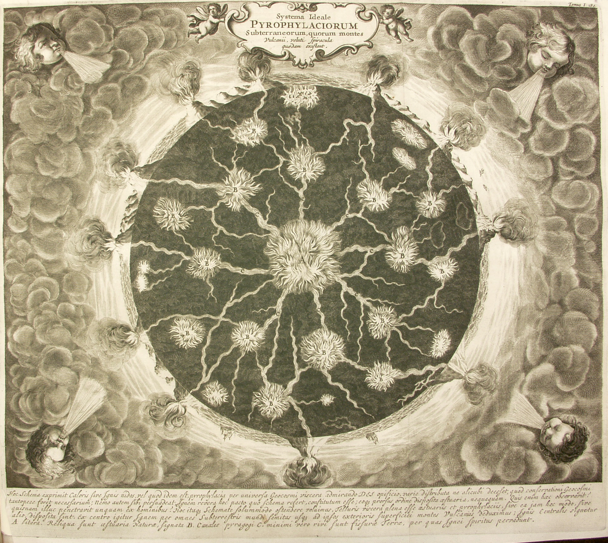
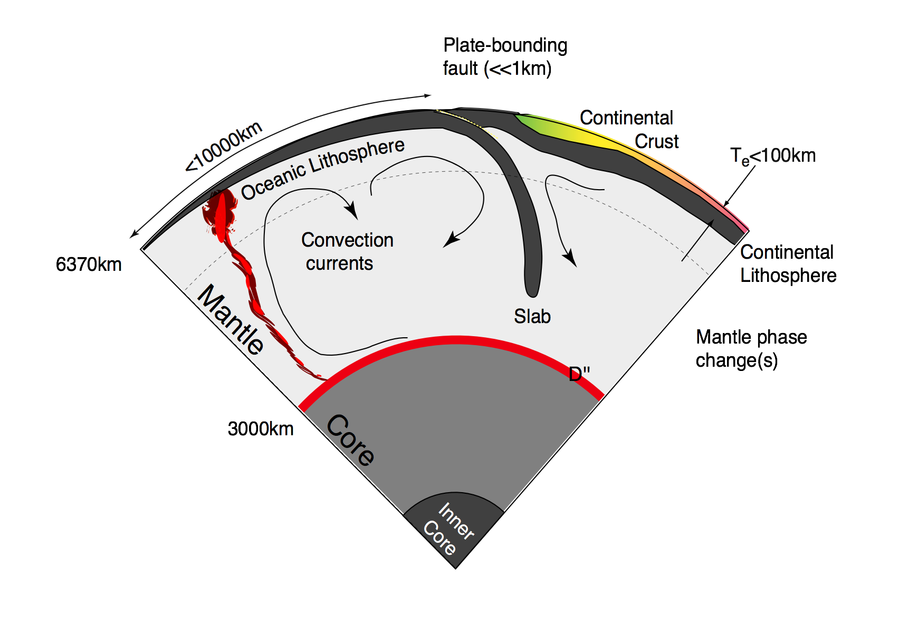

VIEPS Geodynamics — 2015

Athanasius Kircher, Mundus subterraneus (1664/65): “Systema Ideale PYRO- PHYLACIORUM Subterraneorum, quorum montes Vulcanii, veluti spiracula quaedam existant”
Louis Moresi (louis.moresi@unimelb.edu.au)
Our goal is to develop an quantitative understanding of the dynamic processes within the Earth and sister planets as I have sketched in the Figure to the right. These dynamic processes are largely driven by the internal heat of the planet escaping to the surface through whatever mechanisms are available. Some of the heat is left over from the original formation of the planet, and the rest originates in the decay of radioactive elements. In the Earth’s early history and elsewhere in the solar system, tidal heating, chemical segregation, and impacts have all played a role in supplying the interior heat budget. Figure [fig:Diagrams_EarthProcessesPlume] is a schematic of the Earth’s interior and something similar for Venus and Mars would be, on the face of it, much simpler.
r90mm

[fig:Diagrams_EarthProcessesPlume]
This is because the Earth’s dynamics is completely dominated by Plate Tectonics — a unique manifestation of interior heat loss as far as we are aware. Part of our task is to understand why plate tectonics is a possible outcome of a hot planet, but also why it is not the only possible outcome. If we can also understand how the different modes are selected for planets of different size, composition, and heat budget, then we have a powerful way to predict the geological behaviour of extrasolar planets. Plate tectonics creates a number of very efficient cycling mechanisms which link the interior of the Earth and the Atmosphere and Oceans; it may prove to be an essential ingredient for the kind of friendly world we expect to be needed to nurture (intelligent) life.
Global scale geodynamics is a discipline where we cannot do controlled experiments on the basic processes we are studying. We rely on observing the Earth and the other terrestrial planets and moons and looking for multiple manifestations of the same processes under different conditions to give us control on certain parameters.
While it is not possible to do experiments at the planetary scale over geological time, it is possible to perform experiments at a physically manageable size and, by careful scaling, to generalise the results to geologically relevant space and time-scales. If these processes of interest can be understood through a mathematical description, then the equations are automatically applicable at geological time and space scales provided the assumptions which go into developing the mathematical model are still valid.
We will frequently be talking about “modeling” — people mean many different things by this and all of the following fall under the general concept of modeling:
Laboratory based physical models which can be scaled to give meaningful, quantitative insight into deformation at geological scales.
The building of mathematical descriptions of the world and their use to approximate physical "reality".
Computational solution of these descriptions (where needed) and the concept of a numerical model.
How to go about constructing a model
How to go about using a model (these are quite different things !).
Exploring parameter variation to understand the dominant effects.
These notes contains material at different levels. There is broadly descriptive content which is intended to introduce the subject and lead up to the more advanced mathematical content. It should be possible to follow these notes without detailed knowledge of how the mathematical results are obtained, but it is expected that you can use the results in exercises for to solve real problems in geophysics.
Familiarity with vector & tensor notation & index notation is required for understanding the kinds of equations we will be dealing with and I interchange them a little. On the assumption that these things are disconcerting (at best) the first few times, I tend to write everything out in full – at least for the Cartesian case. In other geometries, vector notation generally still holds, but the definition of the operators can be very different, and it is always worth checking before using them.
r50mm
We start by deriving the equations of motion, energy balance and so on through a conservation principle. This will give a useful insight into the different forms of the equations which we will later encounter.
A general conservation law does not distinguish the quantity which is being conserved – it is a mathematical identity. Consider a quantity \(\phi\) / unit mass which is carried around by a fluid. We can draw an arbitrary volume, \(\Omega\) to contain some amount of this fluid at a given time. We label the surface of the volume \(\Omega\) as \(\Gamma\), and define an outward surface normal vector \(\mathbf{d}\boldsymbol{\Gamma}\) which is normal to the tangent plane of an infinitesimal element of the surface and has a magnitude equal to the area of this element.
We also define a source/sink term, \(H\) / unit mass which generates/consumes the quantity \(\phi\), and a flux term, \(\mathbf{F}\) which occurs across the surface when the fluid is stationary (e.g. this might represent diffusion of \(\phi\)). The rate of change of \(\phi\) is given by combining the contribution due to the source term, the stationary flux term, and the effect of motion of the fluid.
\[\frac{d}{dt} \int_{\Omega} \rho \phi d\Omega = - \int_{\Gamma} \mathbf{F} \cdot \mathbf{d}\boldsymbol{\Gamma} + \int_{\Omega} \rho H d\Omega - \int _{\Gamma} \rho \phi \mathbf{v} \cdot \mathbf{d}\boldsymbol{\Gamma} \label{eq:cons1}\]
where the final term is the change due to the fluid carrying \(\phi\) through the volume. Fluxes are positive outward (by our definition of \(\mathbf{d}\boldsymbol{\Gamma}\)), so a positive flux reduces \(\phi\) within \(d\Omega\) and negative signs are needed for these terms.
We can generally use Gauss’ theorem to write surface integrals as volume integrals:
\[\int_{\Gamma} \phi \mathbf{u} \cdot \mathbf{d}\boldsymbol{\Gamma}= \int_{\Omega} \nabla \cdot (\phi \mathbf{u}) d\Omega\]
The test surface, \(\Gamma\), and volume, \(\Omega\) are assumed to be fixed in the lab reference frame so that the order of integration and differentiation can be interchanged
\[\frac{d}{dt} \int_\Omega \rho \phi d\Omega = \int_\Omega \frac{\partial \rho \phi}{\partial t} d\Omega\]
Allowing us to write \[\int_{\Gamma} \mathbf{F} \cdot \mathbf{d}\boldsymbol{\Gamma}+ \int _{\Gamma} \rho \phi \mathbf{v} \cdot \mathbf{d}\boldsymbol{\Gamma}= \int_{\Omega} \nabla \cdot (\mathbf{F} + \rho \phi \mathbf{v}) d\Omega\]
so that we rewrite the general conservation equation ([eq:cons1]) as \[\int_{\Omega} \left[ \frac{d \rho \phi}{dt} + \nabla \cdot (\mathbf{F} + \rho \phi \mathbf{v}) -\rho H \right] d\Omega =0\]
We can now appeal to the fact that this conservation law holds regardless of our particular choice of volume \(\Omega\) and, therefore, the integral above can only be zero for arbitrary \(\Omega\) if the enclosed term is zero everywhere, i.e. \[\frac{d \rho \phi}{dt} + \nabla \cdot (\mathbf{F} + \rho \phi \mathbf{v}) -\rho H =0 \label{eq:cons2}\]
This is the general conservation rule for any property \(\phi\) of a moving fluid. We now consider several quantities and develop specific conservation laws.
In this case \(\phi=1\) (since \(\int_\Omega \rho d\Omega \rightarrow \mbox{mass}\)), \(\mathbf{F} = H = 0\). Thus, equation ([eq:cons2]) gives \[\textcolor[rgb]{0.7,0.0,0.0}{\frac{\partial \rho}{\partial t} + \nabla \cdot \rho \mathbf{v} = 0} \label{eq:masscons}\]
The thermal energy / unit mass is \(C_p T\) and the conductive heat flux \(\mathbf{F}\) is given by \(\mathbf{F} = -k \nabla T\), where \(k\) is the thermal conductivity. Then the general conservation law of ([eq:cons2]) reduces to \[\frac{\partial (\rho C_p T)}{\partial t} + \nabla \cdot \left(-k \nabla T + \rho C_p T \mathbf{v}\right) - \rho H = 0\]
Rearranging with some foresight gives this \[\frac{C_p T}{\rho} \left[ \frac{\partial \rho}{\partial t} + \nabla \cdot \rho \mathbf{v} \right] + \frac{\partial C_p T}{\partial t} + \mathbf{v} \cdot \nabla C_p T = \frac{1}{\rho} \nabla \cdot k \nabla T + H\]
Where the term in square brackets is simply the statement of mass conservation which vanishes identically. The constant density assumption is just to simplify the discussion at this point and will have to be revisited later in the context of thermal convection where density changes drive the flow.
If the heat capacity, \(C_p\) and thermal conductivity, \(k\) are constants, then the conservation equation becomes \[\textcolor[rgb]{0.7,0.0,0.0}{ \left( \frac{\partial T}{\partial t} + \mathbf{v} \cdot \nabla T \right)= \kappa \nabla^2 T + \frac{H}{C_p} } \label{eq:energycons}\]
where \(\kappa\) is the thermal diffusivity, \(\kappa = k/\rho C_p\).
This equation is linear provided that the velocity field is specified and is independent of \(T\). Clearly this is generally not true. A new bit of notation has been defined in the process of this derivation. The meaning of the \(\mathbf{v} \cdot \nabla\) operator is \[\mathbf{v} \cdot \nabla \equiv v_j \frac{\partial}{\partial x_j}\]
For later reference, this is how it looks: \[(\mathbf{v} \cdot \nabla) T = v_1 \frac{\partial T}{\partial x_1} + v_2 \frac{\partial T}{\partial x_2} + v_3 \frac{\partial T}{\partial x_3}\]
The Laplacian, \(\nabla^2\), is this expression (for scalar \(T\)) \[\nabla^2 T \equiv \frac{\partial^2 T}{\partial x_1^2} + \frac{\partial^2 T}{\partial x_2^2} + \frac{\partial^2 T}{\partial x_3^2}\]
Momentum is a vector quantity, so the form of ([eq:cons1]) is slightly different. The source term in a momentum equation represents a force, and the surface flux term represents a stress. \[\frac{d}{dt}\int_{\Omega} \rho \mathbf{v} d\Omega = - \int_{\Omega} \rho g \hat{\mathbf{z}} d\Omega + \int_{\Gamma} \boldsymbol{\sigma} \cdot \mathbf{d}\boldsymbol{\Gamma}- \int_{\Gamma} \rho \mathbf{v} (\mathbf{v} \cdot \mathbf{d}\boldsymbol{\Gamma}) \label{eq:momcons1}\]
Gravity acts as a body force in the vertical direction, \(\hat{\mathbf{z}}\). We have introduced the stress tensor, \(\boldsymbol{\sigma}\); the force / unit area exerted on an arbitrarily oriented surface with normal \(\hat{\mathbf {n}}\) is \[f_i = \sigma_{ij} n_j\]
The application of Gauss’ theorem, and using the arbitrary nature of the chosen volume to require the integrand to be zero, as before, gives \[\frac{\partial}{\partial t}(\rho \mathbf{v}) +\rho g \hat{\mathbf{z}} - \nabla \cdot \sigma + \nabla \cdot (\rho \mathbf{v} \mathbf{v}) = 0 \label{eq:momcons2}\]
Vector notation allows us to keep a number of equations written as one single equation. However, at this point, keeping the equations in vector notation makes the situation more confusing. Particularly, the last term of equation ([eq:momcons2]) stretches the current notation rather too much. Instead, we consider the individual components of momentum, each of which must satisfy the conservation law independently
In index notation, equation ([eq:momcons2]) is written as \[\textcolor[rgb]{0.0,0.7,0.0}{ \frac{\partial \rho v_i}{\partial t}} + \rho g \delta_{i3} - \frac{\partial \sigma_{ij}}{\partial x_j} + \textcolor[rgb]{0.0,0.0,0.7}{ \frac{\partial(\rho v_i v_j)}{\partial x_j}} = 0 \label{eq:momindx}\]
where the troublesome final term is now unambiguous. Repeated indeces in each term are implicitly to be summed. \(\delta_{ij}\) is the kronecker delta which obeys: \[\delta_{ij} = \begin{cases} 0 & \text{if $i \neq j$}, \\ 1 & \text{if $i = j$}. \end{cases}\]
With some foresight, we expand the derivatives of products of two terms and gather up some of the resulting terms: \[v_i \left[\textcolor[rgb]{0.0,0.7,0.0}{ \frac{\partial \rho}{\partial t}} + \textcolor[rgb]{0.0,0.0,0.7}{ \frac{\partial \rho v_j}{\partial x_j}} \right] + \textcolor[rgb]{0.0,0.7,0.0}{ \rho \frac{\partial v_i}{\partial t}} + \textcolor[rgb]{0.0,0.0,0.7}{ \rho v_j \frac{\partial v_i}{\partial x_j}} = \frac{\partial \sigma_{ij}}{\partial x_j} -\rho g \delta_{i3}\]
The term in square brackets is, in fact, a restatement of the conservation of mass derived above and must vanish. The remaining terms can now be written out in vector notation as \[\textcolor[rgb]{0.7,0.0,0.0}{ \rho \left( \frac{\partial \mathbf{v}}{\partial t} + (\mathbf{v} \cdot \nabla) \mathbf{v} \right) = \nabla \cdot \boldsymbol{\sigma} - g\rho\hat{\mathbf{z}} } \label{eq:momcons3}\]
Note: The \(\mathbf{v} \cdot \nabla\) notation we introduced earlier is now an operator on a vector. In this context, the \(\mathbf{v} \cdot \nabla\) operator acts on each component of the vector independently. Written out it looks like this: \[\begin{split} (\mathbf{v} \cdot \nabla) \mathbf{u} = & \hat{\boldsymbol{\imath}} \left( v_1 \frac{\partial u_1}{\partial x_1} + v_2 \frac{\partial u_1}{\partial x_2} + v_3 \frac{\partial u_1}{\partial x_3} \right) \\ & \hat{\boldsymbol{\jmath}} \left( v_1 \frac{\partial u_2}{\partial x_1} + v_2 \frac{\partial u_2}{\partial x_2} + v_3 \frac{\partial u_2}{\partial x_3} \right) \\ & \hat{\boldsymbol{k}} \left( v_1 \frac{\partial u_3}{\partial x_1} + v_2 \frac{\partial u_3}{\partial x_2} + v_3 \frac{\partial u_3}{\partial x_3} \right) \\ \end{split}\]
The formulation above is quite general, and can be extended where necessary to include conservation laws for additional physical variables (for example, angular momentum, electric current). Specific to the type of material which is deforming is the constitutive law which describes the stress. In the case of an incompressible fluid, the stress is related to strain rate through a viscosity, \(\eta\), and to the pressure, \(p\). Incompressibility is expressed as \[\nabla \cdot \mathbf{u} = 0\]
This is a tighter constraint than mass conservation and emerges from equation ([eq:masscons]) when \(\rho\) is assumed to be constant. With this assumption, the constitutive law is written (A derivation for this is in Landau & Lifschitz). \[\sigma_{ij} = \eta \left( \frac{\partial v_i}{\partial x_j} + \frac{\partial v_j}{\partial x_i}\right) - p\delta_{ij}\]
If the viscosity is constant, then we can substitute the constitutive law into the stress-divergence term of the momentum conservation equation. In index notation once again, \[\begin{split} \nabla \cdot \boldsymbol{\sigma} & = \frac{\partial}{\partial x_j} \eta \left( \frac{\partial v_i}{\partial x_j} + \frac{\partial v_j}{\partial x_i} \right) - \frac{\partial p}{\partial x_j} \delta_{ij} \\ & = \eta \frac{\partial^2 v_i}{\partial x_j \partial x_j} + \eta \frac{\partial^2 v_j}{\partial x_i \partial x_j} - \frac{\partial p}{\partial x_i}\\ & = \eta \nabla^2 \mathbf{v} + \eta \textcolor[rgb]{0.0,0.7,0.0}{ \nabla (\nabla \cdot \mathbf{v})} - \nabla p \end{split}\]
the second term in this final form must vanish because of the incompressibility assumption, so the momentum conservation equation becomes
\[\textcolor[rgb]{0.7,0.0,0.0}{ \rho \left( \frac{\partial \mathbf{v}}{\partial t} + (\mathbf{v} \cdot \nabla) \mathbf{v} \right) = \eta \nabla^2 \mathbf{v} - \nabla p - g\rho\hat{\mathbf{z}} } \label{eq:navstokes}\]
This is the Navier-Stokes equation. Once again some new notation has shown up uninvited. The Laplacian operator \(\nabla^2\) is defined (in a scalar context) as \[\begin{split} \nabla^2 \phi & = \nabla \cdot \nabla \phi \\ & = \frac{\partial^2 \phi}{\partial x^2} + \frac{\partial^2 \phi}{\partial y^2} + \frac{\partial^2 \phi}{\partial z^2} \text{\hspace{1cm} (Cartesian)} \end{split}\]
and in a vector context as \[\begin{split} \nabla^2 \mathbf{u} & = \nabla \nabla \cdot \mathbf{u} - \nabla \times (\nabla \times \mathbf{u}) \\ & = \mathbf{i} \nabla \cdot \nabla u_x + \mathbf{j} \nabla \cdot \nabla u_y + \mathbf{k} \nabla \cdot \nabla u_z \text{\hspace{1cm} (Cartesian)} \end{split}\]
In Cartesian coordinates, the Laplacian operator has a simple form, and the vector Laplacian is simply the scalar operator applied in each direction. In other coordinate systems this operator becomes substantially more elaborate.
The equation which relates pressure, temperature and density is known as the equation of state. For the equations derived so far, we have specified an incompressible fluid, for which no density variations are possible. However, we have also included a source term for momentum which relies on gravity acting on density variations.
This conflict is typical of fluid mechanics: simplifying assumptions if taken to their logical limit imply no motion or some other trivial solution to the equations.
In this case, we make the assumption that density changes are typically small relative to the overall magnitude of the density itself. Terms which are scaled by density can therefore assume that it is a large constant value. Terms which contain gradients of density or density variations should consider the equation of state. This is the Boussinesq approximation and is only a suitable appropriation for nearly- incompressible fluids. In the Navier-Stokes equation, the hydrostatic pressure does not influence the velocity field at all. Only differences in density drive fluid flow, and so the sole term in which density needs to be considered variable is that of the gravitational body forces.
In the case of density variations due to temperature, the equation of state is simply \[\rho = \rho_0 \left(1 - \alpha ( T-T_0 )\right) \label{eq:state}\]
where \(\rho_0\) is the density at a reference temperature \(T_0\). \(\alpha\) is the coefficient of thermal expansion. It is generally much smaller than one, making the Boussinesq approximation a reasonable choice.
The energy and momentum conservation equations thus become coupled through the term \[g\rho\hat{\mathbf{z}} = g \rho_0 \left(1 - \alpha(T-T_0)\right)\]
Density variations due to pressure produce a perfectly vertical, isotropic forcing term on the momentum conservation equation. In the steady state case, this is balanced by the hydrostatic pressure gradient. (The isotropic term does not contribute at all the the deviatoric part of the stress equation and thus cannot induce steady flow). We therefore ignore the vertical density gradient due to the fluid overburden.
Another density variation is that which results from variation in chemical composition from one fluid element to another. This is the case where two immiscible fluids live in the same region. Now density variations might be large – the fluid domains must be considered separately.
We have seen the \(\mathbf{v} \cdot \nabla\) operator a number of times now. The presence of this term causes major difficulties in continuum mechanics since it introduces a strong non-linearity into the momentum equation. It is this term which produces turbulence in high speed flows etc.
This term is the ‘advection’ term which accounts for the passive transport of information (temperature, momentum, by the motion of the fluid. Advection also presents some serious headaches in numerical methods and has spawned entire literatures devoted to efficient and accurate solution methods.
One obvious way to avoid the problem of advection is to consider an elemental volume of space which moves with the fluid. The surface flux term from equation ([eq:cons1]) vanishes immediately
Mathematically, we introduce a new notation (of course), as follows: \[\frac{D \phi}{D t} = \frac{d}{dt} \phi[x_1(t),x_2(t),x_3(t),t]\]
where the change in the reference position \((x_1(t),x_2(t),x_3(t))\) is governed by the local flow velocity: \[\frac{d x_1}{d t} = v_1 \mbox{\hspace{1cm}} \frac{d x_2}{d t} = v_2 \mbox{\hspace{1cm}} \frac{d x_3}{d t} = v_3\]
which keeps the reference point moving with the fluid. Differentiating gives \[\begin{aligned} \frac{D \phi}{D t} &= \frac{\partial \phi}{\partial t} \frac{\partial \phi}{\partial x_1}\frac{d x_1}{d t} + \frac{\partial \phi}{\partial x_2}\frac{d x_2}{d t} + \frac{\partial \phi}{\partial x_3}\frac{d x_3}{d t} \nonumber \\ \intertext{and so leads to} \frac{D \phi}{D t} &= \frac{\partial \phi}{\partial t} v_1 \frac{\partial \phi}{\partial x_1} + v_2 \frac{\partial \phi}{\partial x_2} + v_3 \frac{\partial \phi}{\partial x_3} \nonumber \\ \intertext{which is equivalent to} \frac{D \phi}{D t} &= \frac{\partial \phi}{\partial t} + (\mathbf{v} \cdot \nabla) \phi \end{aligned}\]
If we think of \(\phi\) as the concentration of a dye in the fluid, then the above is a conservation equation assuming the dye does not diffuse and has no sources or sinks.
Viewed from a reference frame locked to a particular fluid element, the energy conservation equation becomes \[% \rho ?? \frac{D T}{Dt} = \kappa \nabla^2 T + \frac{H}{C_p}\]
and the momentum conservation equation now becomes \[\rho %% ? \frac{D \mathbf{v} }{D t} = \eta \nabla^2 \mathbf{v} - \nabla P - g\rho\hat{\mathbf{z}}\]
This is a considerably more compact way of writing the equations, but we have only really succeeded in hiding the nasty term under the rug, since it is now necessary to use a coordinate system which is locked into the fluid and rapidly deforms as the fluid flows. Before long, the coordinate system is unimaginably complex – the advection problem returns in another guise. This formulation is known as the Lagrangian formulation and contrasts with the Eulerian viewpoint which is fixed in space.
From the numerical point of view, however, this approach can have some distinct advantages. The computer can often track the distorted coordinate system far better than it can handle successive applications of the \(\mathbf{v} \cdot \nabla\) operator at a fixed point in space. We will return to this point later.
Before too long it would be a good idea to get a feeling for the flavour of these equations which continual rearrangements will not do — it is necessary to examine some solutions.
First of all, however, it is a good idea to make some simplifications based on the kinds of problems we will want to attack. The first thing to do, as is often the case when developing a model, is to test whether any of the terms in the equations are negligibly small, or utterly dominant. This is done by, essentially, dimensional analysis.
Now we consider some ‘typical values’ for the independent dimensions of the system (mass, length, time, temperature, that sort of thing) which can be used to rescale the standard units. We rescale all lengths by the depth of the fluid, \(d\) (e.g. mantle thickness or depth of fluid in a lab tank), time according to the characteristic time for diffusion of heat, and temperature by the temperature difference across the depth of the layer. Obviously these choices are dependent on the problem in question but this exercise is a common one in fluid dynamics and provides a useful first step in the assault on the problem
Various scalings result, with the new variables indicated using a prime (\('\)). \[\begin{array}{llll} x = d.x' & \partial / \partial x = (1/d) \partial / \partial x' & \nabla = (1/d) \nabla ' \\ t = (d^2/\kappa) t' & \partial / \partial t = (\kappa/d^2) \partial / \partial t' & \\ T = \Delta T T' & & \\ v = (\kappa / d) v' && \\ p= p_0 + (\eta \kappa / d^2) p' \end{array}\]
where \[\nabla p_0 = - g \rho_0\]
Substituting for all the existing terms in the Navier-Stokes equation ([eq:navstokes]) using the equation of state for thermally induced variation in density ([eq:state]) gives: \[\frac{\rho_0 \kappa}{d^2} \frac{D}{Dt'} \left( \frac{\kappa}{d} \mathbf{v}' \right) = \frac{\eta}{d^2} \acute{\nabla}^2 \left( \frac{\kappa}{d} \mathbf{v}' \right) - \frac{\eta \kappa}{d^3} \acute{\nabla} p' + g \rho_0 \alpha \Delta T T' \hat{\mathbf{z}}\]
Collecting everything together gives \[\frac{\rho_0 \kappa^2}{d^3} \frac{D\mathbf{v}'}{Dt'} = \frac{\eta \kappa}{d^3} \acute{\nabla}^2 \mathbf{v}' - \frac{\eta \kappa}{d^3} \acute{\nabla} p' + g \rho_0 \alpha \Delta T T' \hat{\mathbf{z}}\]
Divide throughout by \(\eta \kappa / d^3\) gives \[\begin{aligned} \frac{\rho \kappa}{\eta} \frac{D\mathbf{v}'}{Dt'} & = \acute{\nabla}^2 \mathbf{v}' - \acute{\nabla} p' + \frac{g \rho_0 \alpha \Delta T d^3}{\kappa \eta} T' \hat{\mathbf{z}} \nonumber \\ \intertext{or} \frac{1}{{\rm Pr}} \frac{D\mathbf{v}'}{Dt'} & = \acute{\nabla}^2 \mathbf{v}' - \acute{\nabla} p' + {\rm Ra} T' \hat{\mathbf{z}} \end{aligned}\]
\(\rm Pr\) is known as the Prandtl number, and \(\rm Ra\) is known as the Rayleigh number; both are non-dimensional numbers. By choosing to scale the equations (and this is still perfectly general as we haven’t forced any particular choice of scaling yet), we have condensed the different physical variable quantities into just two numbers. The benefit of this procedure is that it tells us how different quantities trade off against one another. For example, we see that if the density doubles, and the viscosity doubles, then the solution should remain unchanged.
In fact, the main purpose of this particular exercise is about to be revealed. The value of mantle viscosity is believed to lie somewhere between \(10^{19}\) and \(10^{23}\) \({\rm Pa . s}\), the thermal diffusivity is around \(10^{-6}{\rm m}^2{\rm s}^{-1}\), and density around \(3300 {\rm kg . m}^{-3}\). This gives a Prandtl number greater than \(10^{20}\). Typical estimates for the Rayleigh number are between \(10^6\) and \(10^8\) depending on the supposed depth of convection, and the uncertain mantle viscosity.
Obviously, the time-dependent term can be neglected for the mantle, since it is at least twenty orders of magnitude smaller than other terms in the equations. The benefit of this is that the nasty advection term for momentum is eliminated – flow in the mantle is at the opposite extreme to turbulent flow. The disadvantage is that the equations now become non-local: changes in the stress field are propogated instantly from point to point which can make the equations a lot harder to solve. This can be counter-intuitive but the consequences are important when considering the dynamic response of the Earth to changes in, for example, plate configurations.
Incidentally, a third, independent dimensionless number can be derived for the thermally driven flow equations. This is the Nusselt number \[{\rm Nu} = \frac{Q}{k\Delta T}\]
and is the ratio of actual heat transported by fluid motions in the layer compared to that transported conductively in the absence of fluid motion.
All other dimensionless quantities for this system can be expressed as some combination of the Nusselt, Rayleigh and Prandtl numbers. The Prandtl number is a property of the fluid itself – typical values are: air, \(\sim\)1; water, \(\sim\) 6; non-conducting fluids \(10^3\) or more; liquid metal, \(\sim\)0.1. Rayleigh number and Nusselt number are both properties of the chosen geometry.
For incompressible flows in two dimensions it can be very convenient to work with the stream-function – a scalar quantity which defines the flow everywhere. Another quantity much beloved of fluid dynamicists is the vorticity. Although the application of such quantities to deformation of the solid planets is actually quite limited, it is still useful for exploring the basic fluid dynamics of the large scale flow.
The stream function is the scalar quantity,\(\psi\), which satisfies \[v_1 = -\frac{\partial \psi}{\partial x_2} \mbox{\hspace{1cm}} v_2 = \frac{\partial \psi}{\partial x_1} \label{eq:strmfn}\] so that, automatically, \[\frac{\partial v_1}{\partial x_1} + \frac{\partial v_2}{\partial x_2} = 0\]
Importantly, computing the following \[(\mathbf{v} \cdot \nabla) \psi = v_1 \frac{\partial \psi}{\partial x_1} + v_2 \frac{\partial \psi}{\partial x_2} = \frac{\partial \psi}{\partial x_2} \frac{\partial \psi}{\partial x_1} - \frac{\partial \psi}{\partial x_1} \frac{\partial \psi}{\partial x_2} = 0\] tells us that \(\psi\) does not change due to advection – in other words, contours of constant \(\psi\) are streamlines of the fluid.
Provided we limit ourselves to the xy plane, it is possible to think of equation ([eq:strmfn]) as \[\mathbf{v} = \nabla \times (\psi \hat{\mathbf{k}})\]
This form can be used to write down the2D axisymetric version of equation ([eq:strmfn]) at once \[\begin{aligned} u_r = -\frac{1}{r}\frac{\partial \psi}{\partial \theta} & & u_\theta = \frac{\partial \psi}{\partial r} \end{aligned}\] which automatically satisfies the incompressibility condition in plane polar coordinates \[\frac{1}{r}\frac{\partial}{\partial r}(ru_r) + \frac{1}{r}\frac{\partial u_\theta}{\partial \theta} = 0\]
Vorticity is defined by \[\boldsymbol{\omega} = \nabla \times \mathbf{v}\]
In 2D, the vorticity can be regarded as a scalar as it has only one component which lies out of the plane of the flow.
\[\omega = \frac{\partial v_2}{\partial x_1} - \frac{\partial v_1}{\partial x_2}\] which is also exactly equal to twice the local measure of the spin in the fluid. Local here means that it applies to an infinitessimal region around the sample point but not to the fluid as a whole.
This concept is most useful in the context of invicid flow where vorticity is conserved within the bulk of the fluid provided the fluid is subject to only conservative forces – that is ones which can be described as the gradient of a single-valued potential.
In the context of viscous flow, the viscous effects acts cause diffusion of vorticity, and in our context, the fact that buoyancy forces result from to (irreversible) heat transport means that vorticity has sources. Taking the curl of the Navier-Stokes equation, and substituting for the vorticity where possible gives \[\frac{1}{\rm Pr} \left( \frac{D \boldsymbol{\omega}}{D t} - (\boldsymbol{\omega} \cdot \nabla) \mathbf{v} \right) = \eta \nabla ^2 \boldsymbol{\omega} + {\rm Ra} \frac{\partial T}{\partial x_1}\] The pressure drops out because \(\nabla \times \nabla P = 0 \mbox{\hspace{0.5cm}} \forall P\).
In the context of highly viscous fluids in 2D, the vorticity equation is \[\nabla ^2 \omega = - Ra \frac{\partial T}{\partial x_1} \label{eq:vorteqn}\] and, by considering the curl of \((-\partial \psi / \partial x_2, \partial \psi / \partial x_1, 0)\) the stream function can be written \[\nabla ^2 \psi = \omega \label{eq:psivort}\]
This form is useful from a computational point of view because it is relatively easy to solve the Laplacian, and the code can be reused for each application of the operator. The Laplacian is also used for thermal diffusion – one subroutine for three different bits of physics which is elegant in itself if nothing else.
The biharmonic operator is defined as \[\nabla^4 \equiv \nabla^2 ( \nabla ^2) \equiv \left( \frac{\partial ^4}{\partial x_1^4} + \frac{\partial ^2}{\partial x_1^2} \frac{\partial ^2}{\partial x_2^2} + \frac{\partial ^4}{\partial x_2^4} \right)\] The latter form being the representation in Cartesian coordinates.
Using this form, it is easy to show that equations ([eq:vorteqn]) and ([eq:psivort]) can be combined to give \[\nabla^4 \psi = -{\rm Ra} \frac{\partial T}{\partial x_1} \label{eq:biharm}\]
The stream-function / vorticity form we have just used is a simplification of the more general case of the poloidal / toroidal velocity decomposition which turns out to be quite useful to understand the balance of different contributions to the governing equation.
We can make a Helmholtz decomposition of the velocity vector field:
\[\mathbf{u} = \nabla \phi + \nabla \times \mathbf{A}\]
Then for an incompressible flow, since \(\nabla \cdot \mathbf{u} = 0\), \[\mathbf{u} = \nabla \times \mathbf{A} \label{eq:curlA}\]
Now suppose there is some direction (\(\hat{\mathbf{z}}\)) which we expect to be physically favoured in the solutions, we can rewrite [eq:curlA] as
\[\mathbf{u} = \textcolor[rgb]{0.7,0.0,0.0}{\nabla \times(\Psi \hat{\mathbf{z}})} + \textcolor[rgb]{0.0,0.0,0.7}{ \nabla \times\nabla \times(\Phi \hat{\mathbf{z}})} \label{eq:poltor}\]
Where the first term on the right is the Toroidal part of the flow, and the second term is the Poloidal part. Why is this useful ? Let’s substitute ([eq:poltor]) into the Stokes’ equation for a constant viscosity fluid \[\eta \nabla^2 \mathbf{u} - \nabla p = g \rho \hat{\mathbf{z}} \label{eq:cvstokes}\] where \(\hat{\mathbf{z}}\) is the vertical unit vector (defined by the direction of gravity) and is clearly the one identifiable special direction, then equate coefficients in the \(\hat{\mathbf{z}}\) direction, and using the following results:
\[\hat{\mathbf{z}} \cdot \nabla \times \nabla^2 \mathbf{u} = - \nabla^2 \nabla_h^2\Psi\]
\[\hat{\mathbf{z}} \cdot \nabla \times \nabla \times \nabla^2 \mathbf{u} = \nabla^2 \nabla^2 \nabla_h^2\Phi\]
where \[\nabla_h = \left( \frac{\partial}{\partial x}, \frac{\partial}{\partial y}, 0 \right)\] is a gradient operator limited to the plane perpendicular to the special direction, \(\hat{\mathbf{z}}\).
If we first take the curl of ([eq:cvstokes]), and look at the \(\hat{\mathbf{z}}\) direction, \[\hat{\mathbf{z}} \cdot \eta \nabla \times \nabla^2 \mathbf{u} = -\eta \nabla^2 \nabla_h^2\Psi = \hat{\mathbf{z}} \cdot \left( g \nabla \times \left( \rho \hat{\mathbf{z}}\right)\right) = 0\] we see that there is no contribution of the toroidal velocity field to the force balance. This balance occurs entirely through the poloidal part of the velocity field. If we take the curl twice and, once again, look at the \(\hat{\mathbf{z}}\) direction:
\[\hat{\mathbf{z}} \cdot \eta \nabla \times \nabla \times \nabla^2 \mathbf{u} = \eta \nabla^2 \nabla^2 \nabla_h^2 \Phi = \hat{\mathbf{z}} \cdot g \nabla \times \nabla \times \left( \rho \hat{\mathbf{z}}\right) = \nabla_h^2 (\rho g)\]
Which is the 3D equivalent of the biharmonic equation that we derived above.
Note: if the viscosity varies in the \(\hat{\mathbf{z}}\) direction, then this same decoupling still applies: bouyancy forces do not drive any toroidal flow. Lateral variations in viscosity (perpendicular to \(\hat{\mathbf{z}}\)) couple the buoyancy to toroidal motion. This result is general in that it applies to the spherical geometry equally well assuming the radial direction (of gravity) to be special.
Thermal convection describes the a process in which a fluid organizes itself into a structured flow pattern on a macroscopic scale to transport energy. Convection may be mechanically driven by stirring, but more commonly we refer to natural convection in which buoyancy due to a source of heat (and/or compositional variation) induces flow which transports and dissipates this anomalous buoyancy.
The Earth’s interior, on a geological timescale is a highly viscous fluid which is heated from below by heat escaping from the core, and internally by the decay of radioactive elements. In this respect
Description - what is involved ... Goal is to understand finite amplitude convection with complicated rheology and realistic initial, boundary conditions.
Does convection always occur in a layer heated from below ? In principle this would always provide a way to transport additional heat, but how much work would convection have to do in order to transport this extra heat ? One way to determine the answer is to consider small disturbances to a layer with otherwise uniform temperature and see under what conditions the perturbations grow (presumably into fully developed convection). This approach allows us to make linear approximations to the otherwise non-linear equations by dropping the small, high order non-linear terms.
We solve the incompressible flow equations (stream function form, [eq:biharm]) and energy conservation equation in stream function form: \[\frac{\partial T}{\partial t} + \left[ -\frac{\partial \psi}{\partial x_2}\frac{\partial T}{\partial x_1} +\frac {\partial \psi}{\partial x_1}\frac{\partial T}{\partial x_2} \right] = \nabla^2 T\] By substituting throughout for a temperature which is a conductive profile with a small amplitude disturbance, \(\theta \ll 1\) \[T = 1- x_2 + \theta\] Remember that the equations are non-dimensional so that the layer depth is one, and the temperature drop is one.
The advection term \[-\frac{\partial \psi}{\partial x_2}\frac{\partial T}{\partial x_1} +\frac {\partial \psi}{\partial x_1}\frac{\partial T}{\partial x_2} \rightarrow -\frac{\partial \psi}{\partial x_2}\frac{\partial \theta}{\partial x_1} -\frac{\partial \psi}{\partial x_1} +\frac {\partial \theta}{\partial x_2}\frac{\partial \psi}{\partial x_1}\] is dominated by the \(\partial \psi / \partial x_1\) since all others are the product of small terms. (Since we also know that \(\psi \sim \theta\) from equation ([eq:biharm])). Therefore the energy conservation equation becomes \[\frac{\partial \theta}{\partial t} - \frac{\partial \psi}{\partial x_1} = \nabla^2 \theta\] which is linear.
Boundary conditions for this problem are zero normal velocity on \(x_2 = 0,1\) which implies \(\psi=0\) at these boundaries. The form of the perturbation is such that \(\theta =0\) on \(x_2 = 0,1\), and we allow free slip along these boundaries such that \[\sigma_{12} = \frac{\partial v_1}{\partial x_2} + \frac{\partial v_2}{\partial x_1} =0\] when \(x_2 = 0,1\) which implies \(\nabla^2 \psi =0\) there.
Now introduce small harmonic perturbations to the driving terms and assuming a similar (i.e. harmonic) response in the flow. This takes the form \[\begin{split} \theta &= \Theta(x_2) \exp(\sigma t) \sin kx_1 \\ \psi &= \Psi(x_2) \exp(\sigma t) \cos kx_1 \end{split}\] So that we can now separate variables. \(\sigma\) is unknown, however, if \(\sigma < 0\) then the perturbations will decay, whereas if \(\sigma > 0\) they will grow.
Substituting for the perturbations into the biharmonic equation and the linearized energy conservation equation gives \[\left(\frac{d^2}{d{x_2}^2} -k^2 \right)^2 \Psi = -{\rm Ra} k \Theta \label{eq:psitheta1}\] and \[\sigma \Theta + k \Psi = \left(\frac{d^2}{d{x_2}^2} -k^2 \right) \Theta\]
Here we have shown and used the fact that \[\nabla^2 \equiv \left(\frac{\partial^2}{\partial {x_2}^2} -k^2 \right) \label{eq:psitheta2}\] when a function is expanded in the form \(\phi(x,z) = \Phi(z).\sin kx\) – more generally, this is the fourier transform of the Laplacian operator.
Eliminating \(\Psi\) between ([eq:psitheta1]) and ([eq:psitheta2]) gives \[\sigma \left(\frac{d^2}{d {x_2}^2 } - k^2 \right)^2 -{\rm Ra} k^2 \Theta = \left(\frac{d^2}{d {x_2}^2} -k^2 \right)^3 \Theta\] This has a solution \[\Theta = \Theta_0 \sin \pi z\] which satisfies all the stated boundary conditions and implies \[\sigma = \frac{k^2 {\rm Ra}}{(\pi^2 + k^2)^2} -(\pi^2 + k^2)\] a real function of \(k\) and \(\rm Ra\).
For a given wavenumber, what is the lowest value of \(\rm Ra\) for which perturbations at that wavenumber will grow ? \[= \frac{(\pi^2 + k^2)^3}{k^2}\] The absolute minimum value of \({\rm Ra}\) which produces growing perturbations is found by differentiating \({\rm Ra_0}\) with respect to \(k\) and setting equal to zero to find the extremum. \[{\rm Ra_c} = \frac{27}{4} \pi^4 = 657.51\] for a wavenumber of \[k = \frac{\pi}{2^{1/2}} = 2.22\] corresponding to a wavelength of 2.828 times the depth of the layer.
Different boundary conditions produce different values of the critical Rayleigh number. If no-slip conditions are used, for example, then the \(\Theta\) solution applied above does not satisfy the boundary conditions. In general, the critical Rayleigh number lies between about 100 and 3000.
Having determined the conditions under which convection will develop, we next consider what can be calculated about fully developed convection – i.e. when perturbations grow well beyond the linearization used to study the onset of instability.
Let’s consider fully developed convection with high Rayleigh number. From observations of real fluids in laboratory situations, it is well known how this looks. High Rayleigh number convection is dominated by the advection of heat. Diffusion is too slow to carry heat far into the fluid before the buoyancy anomaly becomes unstable. This leads to thin, horizontal “boundary layers” where diffusive heat transfer into and out of the fluid occurs. These are separated by approximately isothermal regions in the fluid interior. The horizontal boundary layers are connected by vertical boundary layers which take the form of sheets or cylindrical plumes depending on a number of things including the Rayleigh number. For the time being we consider only the sheet like downwellings since that allows us to continue working in 2D.
Boundary layer analysis is a highly sophisticated field, and is used in a broad range of situations where differences in scales between different physical effects produce narrow accommodation zones where the ‘weaker’ term dominates (e.g viscosity in ‘invicid’ flow around an obstacle).
Here we first make a wild stab at an approximate theory describing the heat flow from a layer with a given Rayleigh number. The convective flow is shown in Figure 1 together with our rough sketch of what actually happens.
Assuming the simplified flow pattern of the sketch, steady state, and replacing all derivatives by crude differences we obtain (using a vorticity form) \[\kappa \nabla^2 T = (\mathbf{v} \cdot \nabla) T \mbox{\hspace{1cm}} \longrightarrow \mbox{\hspace{1cm}} \frac{v \Delta T}{d} \sim \frac{\Delta T \kappa}{\delta^2}\] and \[\nabla^2 \omega = \frac{g \rho \alpha}{\eta} \frac{\partial T}{\partial x} \mbox{\hspace{1cm}} \longrightarrow \mbox{\hspace{1cm}} \frac{\omega}{\delta ^2} \sim \frac{g \rho \alpha \Delta T}{\eta \delta}\] where \(\omega\sim v / d\) from the local rotation interpretation of vorticity and the approximate rigid-body rotation of the core of the convection cell, and \(v/d \sim \kappa / \delta^2\).
This gives \[\begin{aligned} \frac{\delta}{d} & \sim {\rm Ra}^{-1/3} \\ v & \sim \frac{\kappa}{d} {\rm Ra}^{2/3} \end{aligned}\]
This theory balances diffusion of vorticity and temperature across and out of the boundary layer with advection of each quantity along the boundary layer to maintain a steady state.
The Nusselt number is the ratio of advected heat transport to that purely conducted in the absence of fluid motion, or, using the above approximations, \[\begin{split} {\rm Nu} & \sim \frac{\rho C_p v \Delta T \delta}{(k \Delta T/d)d} \\ & \sim {\rm Ra}^{1/3} \end{split}\]
This latter result being observed in experiments to be in reasonably good agreement with observation.
If we define a boundary Rayleigh number \[{\rm Ra_b} = \frac{g \rho \alpha \Delta T \delta^3}{\kappa \eta}\] then the expression for \(\delta\) gives \[{\rm Ra_b} \sim 1\] so the boundary layer does not become more or less stable with increasing Rayleigh number (this is not universal – for internal heating the boundary layer becomes less stable at higher Rayleigh number).
Another wrinkle can be added to the boundary layer theory by trying to account for the variation in the boundary layer thickness as it moves along the horizontal boundary. This refinement in the theory can account for the form of this thickness, the potential energy change in rising or sinking plumes, and the aspect ratio of the convection (width to height of convection roll) by maximizing Nusselt number as a function of aspect ratio.
Consider the boundary layer to be very thin above the upwelling plume (left side). As it moves to the right, it cools and the depth to any particular isotherm increases (this is clearly seen in the simulation). This can be treated exactly like a one dimensional problem if we work in the Lagrangian frame of reference attached to the boundary layer. That is, take the 1D half-space cooling model and replace the time with \(x_1/v\) (cf. the advection equation in which time and velocity / lengths are mixed).
The standard solution is as follows. Assume a half-space at an intial temperature everywhere of \(T_0\) to which a boundary condition, \(T=T_s\) is applied at \(t=0,x_2=0\).
We solve for \(T(x_2,t)\) by first making a substitution, \[\theta = \frac{T-T_0}{T_s-T_0}\] which is a dimensionless temperature, into the standard diffusion equation to obtain \[\frac{\partial \theta(x_2,t)}{\partial t} = \kappa \frac{\partial ^2 \theta(x_2,t)}{\partial {x_2}^2} \label{eq:difftheta}\]
The boundary conditions on \(\theta\) are simple: \[\begin{aligned} & \theta(x_2,0) = 0 \\ & \theta(0,t) = 1 \\ & \theta(\infty,0) = 0 \end{aligned}\]
In place of \(t,x_2\), we use the similarity transformation, \[\eta = \frac{x_2}{2\sqrt{\kappa t}}\] which is found (more or less) intuitively. Now we need to substitute \[\begin{aligned} \frac{\partial \theta}{\partial t} & = -\frac{d \theta}{d\eta}(\eta/2t) \\ \frac{\partial^2 \theta}{\partial {x_2}^2} & = \frac{1}{4\kappa t}\frac{d^2 \theta}{d \eta^2} \end{aligned}\] to transform ([eq:difftheta]) into \[-\eta \frac{d \theta}{d\eta} = \frac{1}{2} \frac{d^2 \theta}{d \eta^2} \label{eq:diffode}\]
Boundary conditions transform to give \[\begin{aligned} & \theta(\eta=\infty) = 0 \\ & \theta(\eta=0) = 1 \end{aligned}\]
Write \(\phi = d\theta / d\eta\) (for convenience only) to rewrite ([eq:diffode]) as \[\begin{aligned} -\eta \phi &= \frac{1}{2} \frac{d \phi}{d \eta} \\ \intertext{or} -\eta d\eta &= \frac{1}{2} \frac{d\phi}{\phi} \end{aligned}\]
This is a standard integral with solution \[\begin{aligned} & -\eta^2 = \log_e \phi -\log_e c_1 \\ \intertext{such that} & \phi = c_1 \exp(-\eta^2) = \frac{d\theta}{d\eta} \end{aligned}\]
This latter form is then integrated to give the solution: \[\theta = c_1 \int_0^\eta \exp(-{\eta'}^2) d\eta' +1\] Boundary conditions give \[\theta = 1- \frac{2}{\sqrt{\pi}} \int_0^\eta\exp(-{\eta'}^2) d\eta'\]
Which is the definition of the complementary error function (\(\mbox{\rm erfc}(\eta)\)).
Undoing the remaining substitutions gives \[\frac{T-T_0}{T_s-T_0} = \mbox{\rm erfc}\left( \frac{x_2}{2\sqrt{\kappa t}} \right)\]
In our original context of the cooling boundary layer, then, the \(T_ s\) is the surface temperature, \(T_0\) is the interior temperature of the convection cell (\(\Delta T /2\)) and \(t \leftarrow x_1/v\). The thickness of the boundary layer is found by assuming it is defined by a characteristic isotherm (doesn’t much matter which). The progression of this isotherm is \[\delta \propto \sqrt{\kappa t}\] or, in the Eulerian frame \[\delta \propto \sqrt{\kappa x_1 / v}\]
The definition of the Rayleigh number when the layer is significantly internally heated is \[{\rm Ra} = \frac{g \rho^2 \alpha H d^5}{\eta \kappa k}\] where \(H\) is the rate of internal heat generation per unit mass.
The rigorous definition of the Nusselt number is the heat flow through the upper surface divided by the average basal temperature. This allows a Nusselt number to be calculated for internally heated convection where the basal temperature is not known a priori
Internally heated convection is a problem to simulate in the lab, directly, but the same effect is achieved by reducing the temperature of the upper surface as a function of time.
When viscosity is not constant, the equations are considerably complicated. It is no longer possible to form a pure biharmonic equation since \(\eta(x,z)\) cannot be taken outside the differential operators. Nor can stream-function / vorticity formulations be used directly for the same reasons. Spectral methods — the decomposition of the problem into a sum of independent problems in the wavenumber domain — is no longer simple since the individual problems are coupled, not independent.
The Rayleigh number is no longer uniquely defined for the system since the viscosity to which it refers must take some suitable average over the layer — the nature of this average depends on the circumstances.
The form of convection changes since boundary layers at the top and bottom of the system (cold v hot) are no longer symmetric with each other.
The convecting system gains another control parameter which is a measure of the viscosity contrast as a function of temperature.
The application of realistic convection models to the Earth and other planets — particularly Venus.
The simplest computational and boundary layer solutions to the Stokes’ convection equations made the simplifying assumption that the viscosity was constant. Despite the experimental evidence which suggests viscosity variations should dominate in the Earth, agreement with some important observations was remarkably good.
The simulations were not able to produce plate-like motions at the surface (instead producing smoothly distributed deformation) but the average velocity, the heat flow and the observed pattern of subsidence of the ocean floor were well matched.
Experimental determination of the rheology of mantle materials gives \[\dot{\epsilon} \propto \sigma^n d^{-m} \exp\left( -\frac{E+PV}{RT} \right)\] where \(\sigma\) is a stress, \(d\) is grain size, \(E\) is an activation energy, \(V\) is an activation volume, and \(T\) is absolute temperature. (\(R\) is the universal gas constant).
This translates to a viscosity \[\eta \propto \sigma^{1-n} d^m exp\left( \frac{E+PV}{RT} \right)\]
In the mantle two forms of creep are possible, dislocation creep with \(n ~ 3.0\), \(m~0\), \(E ~ 430-540 KJ/mol\), \(V ~ 10 - 20 cm^3/mol\); and diffusion creep with \(n ~ 1.0\), \(m~2.5\), \(E ~ 240-300 KJ/mol\), \(V ~ 5-6 cm^3/mol\). This is for olivine — other minerals will produce different results, of course.
More sophisticated models included the effect of temperature dependent viscosity as a step towards more realistic simulations. In fact, the opposite was observed: convection with temperature dependent viscosity is a much worse description of the oceanic lithosphere than constant viscosity convection. It may, however, describe Venus rather well.
Theoretical studies of the asymptotic limit of convection in which the viscosity variation becomes very large (comparable to values determined for mantle rocks in laboratory experiments) find that the upper surface becomes entirely stagnant with little or no observable motion. Vigorous convection continues underneath the stagnant layer with very little surface manifestation.
This theoretical work demonstrates that the numerical simulations are producing correct results, and suggests that we should look for physics beyond pure viscous flow in explaining plate motions.
Realistic rheological laws show the viscosity may depend upon stress. This makes the problem non-linear since the stress clearly depends upon viscosity. In order to obtain a solution it is necessary to iterate velocity and viscosity until they no longer change.
The obvious association of plate boundaries with earthquake activity suggests that relevant effects are to be found in the brittle nature of the cold plates. Brittle materials have a finite strength and if they are stressed beyond that point they break. This is a familiar enough property of everyday materials, but rocks in the lithosphere are non-uniform, subject to great confining pressures and high temperatures, and they deform over extremely long periods of time. This makes it difficult to know how to apply laboratory results for rock breakage experiments to simulations of the plates.
An ideal, very general rheological model for the brittle lithosphere would incorporate the effects due to small-scale cracks, faults, ductile shear localization due to dynamic recrystalization, anisotropy (... kitchen sink). Needless to say, most attempts to date to account for the brittle nature of the plates have greatly simplified the picture. Some models have imposed weak zones which represent plate boundaries, others have included sharp discontinuities which represent the plate-bounding faults, still others have used continuum methods in which the yield properties of the lithosphere are known but not the geometry of any breaks. Of these approaches, the continuum approach is best able to demonstrate the spectrum of behaviours as convection in the mantle interacts with brittle lithospheric plates. For studying the evolution of individual plate boundaries methods which explicitly include discontinuities work best.
The simplest possible continuum formulation includes a yield stress expressed as an non-linear effective viscosity. \[\eta_{\rm eff} = \frac{\tau_{\rm yield}}{\dot{\varepsilon}}\] This formulation can be incorporated very easily into the mantle dynamics modeling approach that we have outlined above as it involves making modifications only to the viscosity law. There may be some numerical difficulties, however, as the strongly non-linear rheology can lead to dramatic variations in the viscosity across relatively narrow zones.
The Rayleigh number is defined in terms of thermal buoyancy but other sources of buoyancy are possible in fluids.
For example, in the oceans, dissolved salt makes water heavy. When hot salty water (e.g. the outflows of shallow seas such as the Mediterranean) mixes with cold less salty water, there is a complicated interaction.
This is double diffusive convection and produces remarkable layerings etc since the diffusion coefficients of salt and heat are different by a factor of 100.
In the mantle, bulk chemical differences due to subduction of crustal material can be treated in a similar manner. From the point of view of the diffusion equations, the diffusivity of bulk chemistry in the mantle is tiny (pure advection).
Fluid flows with chemical v. thermal bouyancy are termed thermochemical convection problems.
Diapirism is the buoyant upwelling of rock which is lighter than its surroundings. This can include mantle plumes and other purely thermal phenomena but it often applied to compositionally distinct rock masses such as melts infiltrating the crust (in the Archean) or salt rising through denser sediments.
Salt layers may result from the evaporation of seawater. If subsequent sedimentation covers the salt, a gravitionally unstable configuration results with heavier material (sediments) on top of light material (salt). The rheology of salt is distinctly non-linear and also sensitive to temperature. Once buried, the increased temperature of the salt layer causes its viscosity to decrease to the point where instabilities can grow. Note, since there is always a strong density contrast between the two rock types, the critical Rayleigh number argument does not apply – this situation is always unstable, but instabilities can only grow at a reasonable rate once the salt has become weak.
The geometry is outlined above in Figure (
2). We suppose initially that the surface is slightly perturbed with a form of \[w_m = w_{m0} \cos kx\]
where \(k\) is the wavenumber, \(k=2\pi / \lambda\), \(\lambda\) being the wavelength of the disturbance. We assume that the magnitude of the disturbance is always much smaller than the wavelength.
The problem is easiest to solve if we deal with the biharmonic equation for the stream function. Experience leads us to try to separate variables and look for solutions of the form \[\psi = \left( A \sin kx + B \cos kx \right ) Y(y)\]
where the function \(Y\) is to be determined. The form we have chosen for \(w_m\) in fact means \(A=1,B=0\) which we can assume from now on to simplify the algebra.
Substituting the trial solution for \(\psi\) into the biharmonic equation gives \[\frac{d^4 Y}{d y^4} -2k^2 \frac{d^2 Y}{dy^2} +k^4 Y = 0\]
which has solutions of the form \[Y = A \exp(m y)\] where \(A\) is an arbitrary constant. Subtituting gives us an equation for \(m\) \[m^4 - 2 k^2 m^2 + k^4 = (m^2 - k^2)^2 = 0 \label{eq:diapaux}\] or \[m = \pm k\]
Because we have degenerate eigenvalues (i.e. of the four possible solutions to the auxilliary equation ([eq:diapaux]), two pairs are equal) we need to extend the form of the solution to \[Y = (By+A) \exp(m y)\] to give the general form of the solution in this situation to be \[\begin{aligned} \psi &= \sin kx \left( A e^{-ky} + B y e^{-ky} + C e^{ky} + D y e^{ky} \right) \label{eq:biharmsoln1} \\ \intertext{or, equivalently} \psi &= \sin kx \left( A_1 \cosh ky + B_1 \sinh ky + C_1 y \cosh ky + D_1 y \sinh ky \right) \label{eq:biharmsoln2} \end{aligned}\]
This equation applies in each of the layers separately. We therefore need to find two sets of constants \(\{A_1,B_1,C_1,D_1\}\) and \(\{A_2,B_2,C_3,D_4\}\) by the application of suitable boundary conditions. These are known in terms of the velocities in each layer, \(\mathbf{v}_1 = \mathbf{i} u_1 +\mathbf{j} v_1\) and \(\mathbf{v}_2 = \mathbf{i} u_2 +\mathbf{j} v_2\): \[\begin{aligned} u_1 = v_1 &= 0 \text{\hspace{1cm} on \hspace{1cm}} y = -b \\ u_2 = v_2 &= 0 \text{\hspace{1cm} on \hspace{1cm}} y = b \end{aligned}\]
together with a continuity condition across the interface (which we assume is imperceptibly deformed
\[u_1 = u_2 \text{\hspace{1cm} and \hspace{1cm}} v_1 = v_2 \text{\hspace{1cm} on \hspace{1cm}} y = 0\]
The shear stress (\(\sigma_{xy}\)) should also be continuous across the interface, which, if we assume equal viscosities, gives \[\frac{\partial u_1}{\partial y} + \frac{\partial v_1}{\partial x} = \frac{\partial u_2}{\partial y} + \frac{\partial v_2}{\partial x} \text{\hspace{1cm} on \hspace{1cm}} y = 0\] and, to simplify matters, if the velocity is continuous across \(y=0\) then any velocity derivatives in the \(x\) direction evaluated at \(y=0\) will also be continuous (i.e. \(\partial v_2 / \partial x = \partial v_1 / \partial x\)).
The expressions for velocity in terms of the solution ([eq:biharmsoln2]) are
\[\begin{aligned} u = -\frac{\partial \psi}{\partial y} & = -\sin kx \left( (A_1 k + D_1 + C_1 k y) \sinh ky + (B_1 k + C_1 + D_1 ky) \cosh ky \right) \\ v = \frac{\partial \psi}{\partial x} & = k \cos kx \left( (A_1 +C_1 y)\cosh ky + (B_1 +D_1 y) \sinh ky \right) \end{aligned}\]
From here to the solution requires much tedious rearrangement, and the usual argument based on the arbitrary choice of wavenumber \(k\) but we finally arrive at \[\begin{gathered} \psi_1 = A_1 \sin kx \cosh ky + \\ A_1 \sin kx \left[ \frac{y}{k b^2} \tanh kb \sinh ky + \left( \frac{y}{b} \cosh ky \frac{1}{kb} \sinh ky \right) \cdot \left( \frac{1}{kb} + \frac{1}{\sinh bk \cosh bk} \right) \right] \times \\ \left[ \frac{1}{\sinh bk \cosh bk} - \frac{1}{(b^2k^2} \tanh bk \right] ^{-1} \label{eq:raytays1} \end{gathered}\] The stream function for the lower layer is found by replacing \(y\) with \(-y\) in this equation. This is already a relatively nasty expression, but we haven’t finished since the constant \(A_1\) remains. This occurs because we have so far considered the form of flows which satisfy all the boundary conditions but have not yet considered what drives the flow in each layer.
To eliminate \(A_1\), we have to consider the physical scales inherent in the problem itself. We are interested (primarily) in the behaviour of the interface which moves with a velocity \(\partial w / \partial t\). As we are working with small deflections of the interface, \[\frac{\partial w}{\partial t} = \left. v \right|_{y=0}\]
Consider what happens when the fluid above the interface is lighter than the fluid below – this situation is stable so we expect the layering to be preserved, and if the interface is disturbed the disturbance to decay. This implies that there must be a restoring force acting on an element of fluid which is somehow displaced across the boundary at \(y=0\) (Figure 3).
This restoring force is due to the density difference between the displaced material and the layer in which it finds itself. The expression for the force is exactly that from Archimedes principle which explains how a boat can float (only in the opposite direction) \[\left. F_2 \right|_{y=0} = \delta x g w (\rho_2 - \rho_1)\] which can be expressed as a normal stress difference (assumed to apply, once again, at the boundary). The viscous component of the normal stress turns out to be zero – proven by evaluating \(\partial v / \partial y\) at \(y=0\) using the expression for \(\phi\) in equation ([eq:raytays1]). Thus the restoring stress is purely pressure \[\left. P_2 \right|_{y=0} = g w (\rho_2 - \rho_1)\]
The pressure in terms of the solution (so far) for \(\psi\) is found from the equation of motion in the horizontal direction (substituting the stream function formulation) and is then equated to the restoring pressure above. \[(\rho_1-\rho_2) g w = -\frac{4 \eta k A_1}{b} \cos kx \left(\frac{1}{kb} + \frac{1}{\sinh bk \cosh bk} \right) \cdot \left( \frac{1}{\sinh bk \cosh bk} - \frac{1}{(b^2k^2} \tanh bk \right)^{-1}\] which allows us to substitute for \(A_1\) in our expression for \(\partial w / \partial t\) above. Since \(A_1\) is independent of \(t\), we can see that the solution for \(w\) will be of a growing or decaying exponential form with growth/decay constant coming from the argument above. \[w(t) = w_0 \exp((t-t_0)/\tau)\] where \[\tau = \frac{4 \eta}{(\rho_1-\rho_2) g b} \left( \frac{1}{kb} + \frac{1}{\sinh bk \cosh bk} \right) \cdot \left( \frac{1}{k^2b^2} \tanh kb - \frac{1}{\sinh kb \cosh kb} \right)^{-1}\]
So, finally, an answer – the rate at which instabilities on the interface between two layers will grow (or shrink) which depends on viscosity, layer depth and density differences, together with the geometrical consideration of the layer thicknesses.
A stable layering results from light fluid resting on heavy fluid; a heavy fluid resting on a light fluid is always unstable (no critical Rayleigh number applies) although the growth rate can be so small that no deformation occurs in practice. The growth rate is also dependent on wavenumber. There is a minimum in the growth time as a function of dimensional wavenumber which occurs at \(k b = 2.4\), so instabilities close to this wavenumber are expected to grow first and dominate.
Remember that this derivation is simplified for fluids of equal viscosity, and layers of identical depth. Remember also that the solution is for infinitessimal deformations of the interface. If the deformation grows then the approximations of small deformation no longer hold. This gives a clue as to how difficulties dealing with the advection term of the transport equations arise.
At some point it becomes impossible to obtain meaningful results without computer simulation. However, plenty of further work has already been done on this area for non-linear fluids, temperature dependent viscosity &c and the solutions are predictably long and tedious to read, much less solve. When the viscosity is not constant, the use of a stream function notation is not particularly helpful as the biharmonic form no longer appears.
(e.g. read work by Ribe, Houseman et al.)
The methodology used here is instructive, as it can be used in a number of different applications to related areas. The equations are similar, the boundary conditions different.
In the postglacial rebound problem, consider a viscous half space with an imposed topography at \(t=0\). The ice load is removed at \(t=0\) and the interface relaxes back to its original flat state.
This can be studied one wavenumber at a time — computing a decay rate for each component of the topography. The intial loading is computed from the fourier transform of the ice bottom topography.
The system is similar to that of the diapirs except that the loading is now applied to one surface rather than the interface between two fluids.
A different interface problem is that of mantle phase changes. Here a bouyancy anomaly results if the phase change boundary is distorted. This can result from advection normal to the boundary bringing cooler or warmer material across the boundary.
The buoyancy balance argument used above can be recycled here to determine a scaling for the ability of plumes/downwellings to cross the phase boundary.
The solution method used for the Rayleigh Taylor problem can also be used in determining spectral Green’s functions for mantle flow in response to thermal perturbations. This is a particularly abstract application of the identical theory.
If a thin viscous layer is compressed from one end then it may develop buckling instabilities in which velocities grow perpendicular to the plane of the layer.
If the layer is embedded between two semi-infinite layers of viscous fluid with viscosity much smaller than the viscosity of the layer, then Biot theory tells us the wavelength of the initial buckling instability, and the rate at which it grows.
The fold geometry evolves as \[w=w_m \cos(kx) e^{\frac{t}{\tau_a}}\] where \[\tau_a = \frac{1}{\bar{P}}\left[ \frac{4 \eta_0}{k} + \frac{\eta_1 h^3}{3k^2} \right]\] and the fastest growing wavenumber is \[k = \frac{6}{h}\left( \frac{\eta_1}{\eta_0} \right)^{\frac{1}{3}}\]
For large deformations we eventually must resort to numerical simulation.
Gravity currents can occur when a viscous fluid flows under its own weight as shown in Figure 6.
We assume that the fluid has constant viscosity, \(\eta\) and that the length of the current is considerably greater than its height. The fluid is embedded in a low viscosity medium of density \(\rho-\Delta \rho\) where \(\rho\) is the density of the fluid itself.
The force balance is between buoyancy and viscosity. The assumptions of geometry allow us to simplify the Stokes equation by assuming horizontal pressure gradients due to the surface slope drive the flow. \[\nabla p = \eta\nabla^2 u \approx g \Delta \rho \frac{\partial h}{\partial x}\]
We assume near-zero shear stress at the top of the current to give \[\frac{\partial u}{\partial z} (x,h,t) = 0\] and zero velocity at the base of the current. Hence \[u(x,z,t) = -\frac{1}{2} \frac{g \Delta \rho}{\eta} \frac{\partial h}{\partial x} z(2h-z)\]
Continuity integrated over depth implies \[\frac{\partial h}{\partial t} + \frac{\partial }{\partial x} \int_0^h u dz = 0\] Combining these equations gives \[\frac{\partial h}{\partial t} -\frac{1}{3} \frac{g \Delta \rho}{\eta} \frac{\partial }{\partial x} \left( h^3 \frac{\partial h}{\partial x} \right) = 0\] Finally, a global constraint fixes the total amount of fluid at any given time \[\int_0^{x_N(t)} h(x,t)dx = qt^\alpha\] The latter term being a fluid source at the origin, and \(x_{N(t)}\) the location of the front of the current. A similarity variable is available \[\nu = \left( \frac{1}{3} g\Delta \rho q^3 / \eta \right)^{-\frac{1}{5}} x t^{-(3\alpha +1) / 5}\] giving a solution of the form \[h(x,t) = \nu_N^{2/3} (3q^2 \eta / (g\Delta\rho))^{1/5} t^{(2\alpha -1) / 5} \phi(\nu/\nu_N)\] where \(\nu_N\) is the value of \(\nu\) at \(x=x_N(t)\). Substituting into the equation for \(\partial h / \partial t\) we find that \(\phi(\nu/\nu_N)\) satisfies \[\phi({\nu}/{\nu_N}) = \left[ \frac{3}{5}(3\alpha+1)\right]^{\frac{1}{3}} \left(1-\frac{\nu}{\nu_N} \right)^{\frac{1}{3}} \left[ 1 - \frac{3\alpha-4}{24(3\alpha+1)}\left(1-\frac{\nu}{\nu_N} \right) + O \left(1-\frac{\nu}{\nu_N} \right)^2 \right]\] Which has an analytic solution if \(\alpha=0\) (only constant sources or sinks) \[\begin{split} \phi({\nu}/{\nu_N}) &= \left( \frac{3}{10}\right)^{\frac{1}{3}} \left( 1-\left(\frac{\nu}{\nu_N}\right)^2 \right)^{\frac{1}{3}} \\ \nu_N &= \left[ \frac{1}{5} \left( \frac{3}{10}\right)^{\frac{1}{3}} \pi^{\frac{1}{2}} \Gamma (1/3) / \Gamma (5/6) \right]^{-\frac{3}{5}} = 1.411 \end{split}\] For all other values of \(\alpha\) numerical integration schemes must be used for \(\phi\).
It is also possible to obtain solutions if axisymmetric geometry is used.
G. F. Davies. Dynamic Earth. Cambridge University Press, New York, 1999.
J. Grotzinger, T. H. Jordan, F. Press, and R. Siever. Understanding Earth. W. H. Freeman & Co, 5 edition, 2006. URL http://bcs.whfreeman.com/understandingearth5e/.
L. D. Landau and E. M. Lifshitz. Fluid Mechanics, volume 6 of Course of Theoretical Physics. Pergamon Press, 1959.
G. Schubert, D. L. Turcotte, and P. Olson. Mantle Convection in Earth and Planets. Cambridge University Press, UK, 2001.
D.L. Turcotte and G. Schubert. Geodynamics. John Wiley and Sons, New York, 1982.